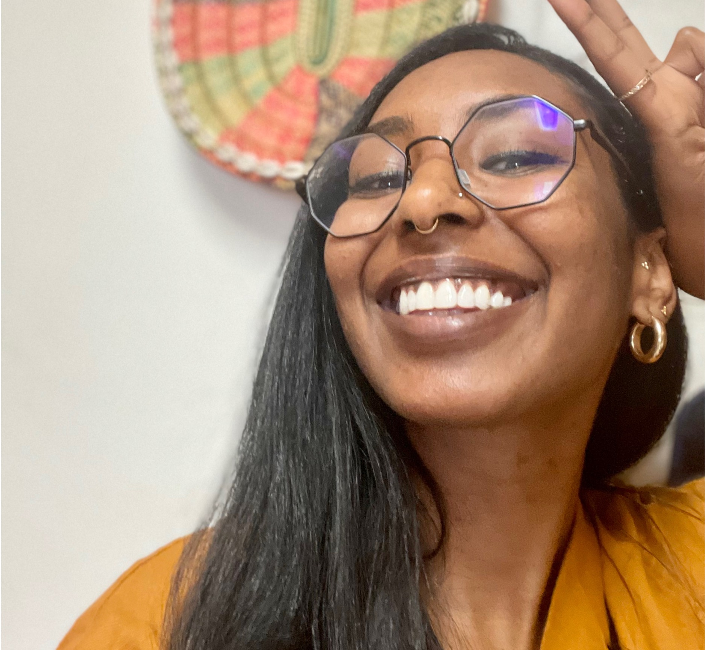

About Me
Selam! I'm Eden Mekonen (she/her/እሷ)
Welcome to my personal website!
I'm a diasporic memory worker, ትዝታ enthusiast, and dual-title Geography and African Studies PhD candidate passionate about collective memory and Black digital preservation.
My Background
I am an Ethiopian-American, born and raised in Los Angeles, CA, and am a Bunton Waller Fellow and #DigBlk Scholar with the Center for Black Digital Research at Penn State.
Prior to studying at Penn State, I worked at Stanford University’s Haas Center for Public Service, where I facilitated and supported students’ exploration of the intersections of leadership, ethics, and sustainable community-partnerships to deepen their knowledge of issues related to justice, equity, belonging, and public service locally and (inter)nationally. Additionally, I also worked in the nonprofit sector at women and youth-serving organizations in Los Angeles, CA, such as Las Fotos Project through AmeriCorps Public Allies, and in Addis Ababa, Ethiopia, at Selamta Family Project through the Ethiopian Diaspora Fellowship.
This passion for community-engaged scholarship stems from my time participating in service-learning coursework in which I conducted oral histories with Ethiopian (im)migrant women in Durban, South Africa, and my time conducting fieldwork on the socio-political and gendered significance of Los Angeles’ Little Ethiopia ethnic enclave to the African Diaspora.
I earned my M.S. in Geography at Penn State and my B.A. in Critical Theory and Social Justice with a Postcolonial Theory emphasis and Interdisciplinary Writing Minor from Occidental College.
What I Do
I am a Human Geographer whose research interests broadly encompass inter-/intra-community memory-making and (digital) placemaking within/across Horn of Africa diasporas. I engage in participatory action research to reciprocally work with (trans)national East African (im)migrants on issues related to (digital) cultural preservation, collective memory and community memorialization, soundscapes, and mutual aid practices to understand how identity and perceptions of identity are informed by place and context.
I have combined these interests in community and Black Digital Studies through my contributions to digital projects such as the Black Alumni Organization (BAO) of Occidental College’s Critical Hope and Black Life at Oxy Digital Research Project, where I served as the project’s Co-Archivist, and in my current role performing Community Engagement with the annual Douglass Day transcribe-a-thon.
As a senior leader of the Visit Google, a multi-award-winning national digital humanities project bringing new digital life to the buried histories of 19th-century Black organizing. In collaboration with project directors P. Gabrielle Foreman and Jim Casey, I am the Project Manager and Metadata Curator. In these roles, I have developed training modules for cataloging thousands of files from scores of digitized archives. The files are collected by our research team, made up of 10 faculty members and dozens of undergraduate and graduate students across 8 academic institutions.
Interests & Hobbies
Outside of work, you can find me visiting a local library, scoping out a museum, going to a show, or attempting to learn how to play the masinko (ማሲንቆ).